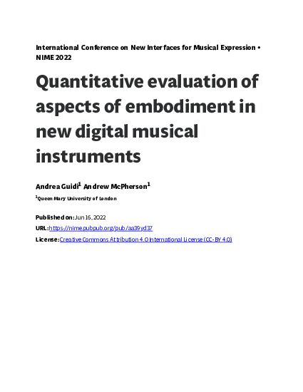
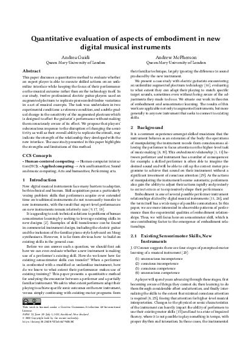
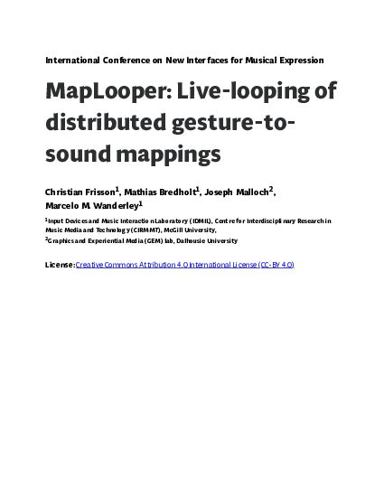
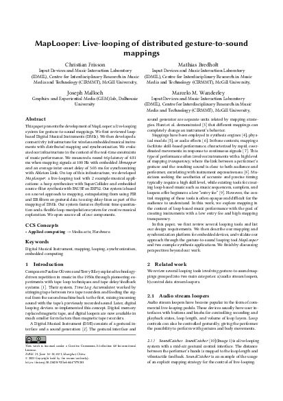
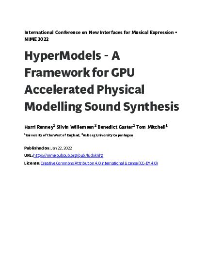
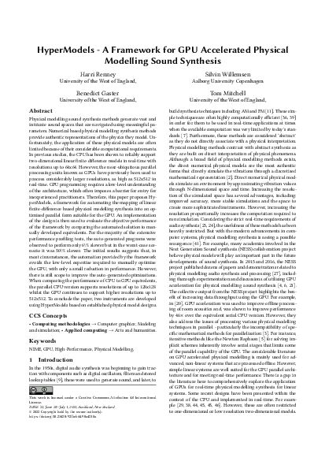
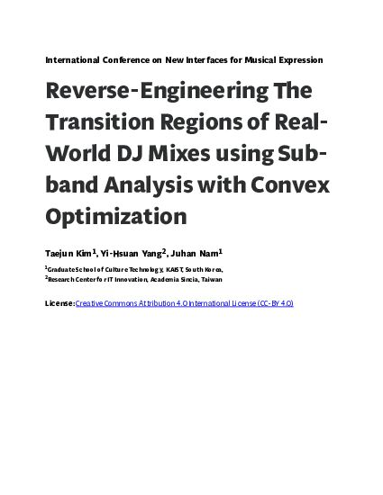
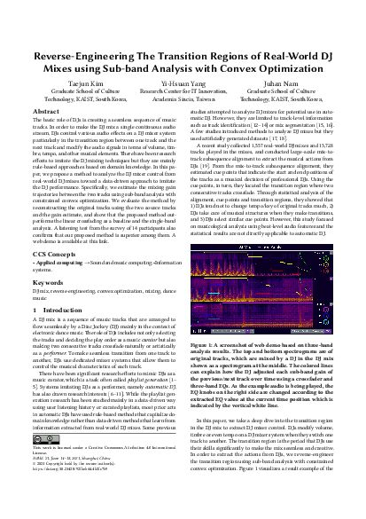

Regenerating PubPub papers in the NIME template
Four papers of different complexity, rebuilt automatically from the PubPub export with make_pdf.py (pandoc + nimeart.cls), shown next to PubPub's own PDF export. No hand editing. The pipeline takes the HTML export as its source, keeps figures at print resolution, converts citations, footnotes and maths, and uses BibTeX with the ACM reference style where PubPub holds structured references (most 2022 papers) or the authors' own formatted reference text otherwise (most 2021 papers).
Revision 2 (same day): display equations are now numbered equation environments from the TeX source PubPub stores (they were being converted from MathML inline); tables shrink to the column width; tables that authors used as image grids become full-width figures; empty paragraphs are dropped; long titles get a short running head.
Known rough edges: CCS concepts are set from the authors' text, not from CCS codes; videos and audio become a note with the URL; "Image N" labels in the text follow PubPub's figure naming; a couple of figures inside tables still render small. See the discussion.
nime2022_1 · Quantitative evaluation of aspects of embodiment in new digital musical instruments
Andrea Guidi, Andrew McPherson · references: structured (BibTeX + ACM style)


nime2021_11 · MapLooper: Live-looping of distributed gesture-to-sound mappings
Christian Frisson, Mathias Bredholt, Joseph Malloch, Marcelo M. Wanderley · references: pre-formatted citation text


nime2022_4 · HyperModels - A Framework for GPU Accelerated Physical Modelling Sound Synthesis
Harri Renney, Silvin Willemsen, Benedict Gaster, Tom Mitchell · references: structured (BibTeX + ACM style)


nime2021_87 · Reverse-Engineering The Transition Regions of Real-World DJ Mixes using Sub-band Analysis with Convex Optimization
Taejun Kim, Yi-Hsuan Yang, Juhan Nam · references: pre-formatted citation text

